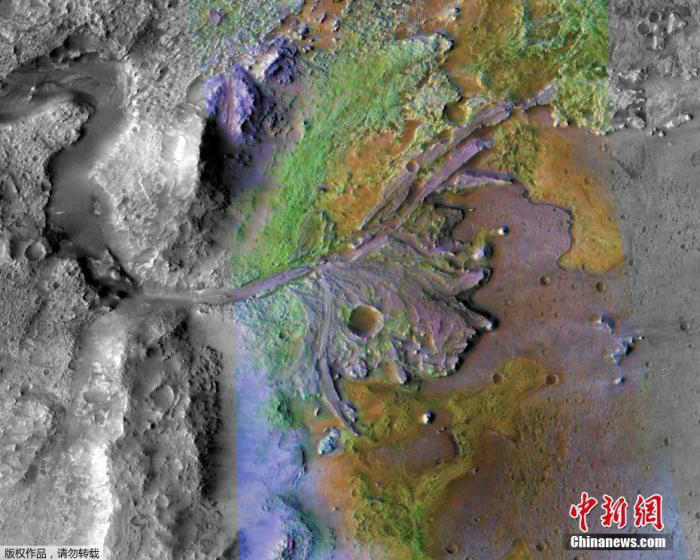
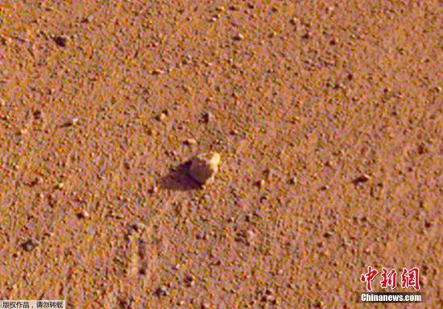

美国国家航空航天局(NASA)10月19日宣布，“奥西里斯-雷克斯”探测器将于本月20日在小行星“本努”(Bennu)表面收集太空岩石样本。
NASA称，这颗被命名为“本努”的小行星，其表面有许多砾石堆积。NASA的探测器“奥西里斯-雷克斯”绕着它运转了近两年。目前，它们距离地球约2.07亿英里。NASA计划在“本努”的一个陨石坑内采集至少2盎司岩石样本。
NASA表示，美国宇航局采集过一些太空岩石样本，如月亮砾石、彗星尘埃和太阳风粒子。如果本次任务成功，将成为NASA采集的最大太空岩石样本。
据《今日美国》报道，该任务首席科学家但丁·洛雷塔本月19日表示，小行星“本努”在45亿年前太阳系形成的时候就已经存在了，其表面拥有大量含碳材料，对这颗小行星的样本进行研究有助于人类了解地球的起源。
NASA介绍称，整个任务将耗时4.5小时。科研人员预先编写了操作程序，因此本次任务是由探测器自动完成。
探测器将先通过一条狭长的空间到达“本努”北半球的一个陨石坑上方。这个被命名为“南丁格尔”的陨石坑直径为52英尺，约为一个网球场的大小。
之后，探测器将执行着陆和采样任务：探测器将“伸出”11英尺长的机械手臂，与小行星表面接触。探测器还将喷出加压氮气并吸走其表面的泥土和砾石。采样时长在5到10秒。
最后，探测器将点燃助推器离开小行星表面。
探测器将向地球发回数据，帮助科研人员判断任务是否成功执行。如果一切顺利，预计探测器在2023年能将样本送返地球。
据美联社报道，绕太阳运行的“本努”，每六年会绕地球一圈。美国宇航局认为，它在下个世纪末撞击地球的几率是1/2700。科学家们称，对这种小行星了解得越多，地球就会越安全。